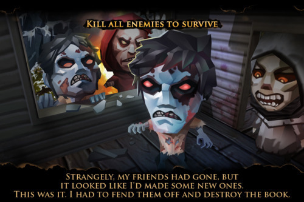

Tue, 24 May 2011 08:40:00 · games · evildead · EvilDeadGame
so heres some new screenshots of our official

So here’s some new screenshots of our Official ’Evil Dead’ Game. The game is set to launch in June on App store. See TouchArcade for more screen reveals. Stay tuned, we’re working really hard to bring this epic game to live!